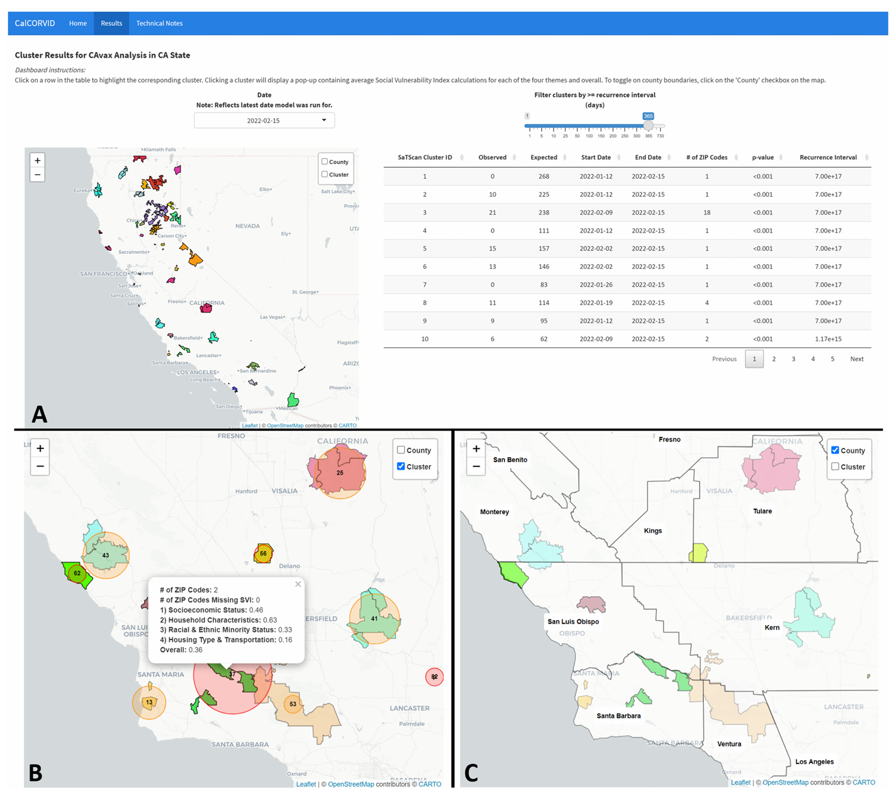

Original Visualization
Title and Source
CalCORVID
Source: California Department of Public Health (CDPH) Modeling Team
Published in: CSTE Stories from the Field; BMC Public Health
Original Screenshot

Brief Introduction
CalCORVID is an open-source RShiny dashboard that visualizes spatiotemporal disease clusters detected by SaTScan. The example dataset contains COVID-19 test positivity data aggregated to census tracts in California, integrated with the Social Vulnerability Index (SVI).
Analysis of the Original
Intended Message
The dashboard communicates whether statistically significant spatiotemporal clusters of COVID-19 positivity exist in California, where they are, and what social vulnerability context characterizes them.
Audience
State and local public health epidemiologists.
Tasks
- Locate significant clusters on a map
- Compare cluster size, location, and time span
- Contextualize clusters using SVI tooltips
- Track cluster evolution using the date dropdown
Critique
Strengths
- Translates technical SaTScan output into an interactive spatial tool.
- Integrates SVI for social determinants context.
Weaknesses
- Circular scan windows mislead users about true cluster shape.
- Randomly assigned cluster colors carry no data meaning.
- Statistical uncertainty is hidden in tooltips.
Redesigned Visualization
Implemented in D3.js using data/CAtest_combgiscol_fnl.csv. The redesign
uses a map-plus-detail-panel layout: the map shows cluster locations over California
county boundaries, and the right panel shows detailed statistics for the selected cluster.
Click a cluster on the map to see details.
Design Decision 1: Map + Detail Panel Layout
What changed: Instead of putting all the information directly on the map, I separated the visualization into two parts: the map for location and the detail panel for statistical information.
Why: Putting the O/E ratio, the four SVI themes, and the time span into the map markers would make the information difficult to read.
Problem addressed: Limitation 1 — misleading cluster shapes, as well as the overall readability issue.
How it improves the design: Users can quickly see the locations on the map and click on a cluster to view its details.
Design Decision 2: Using a Sequential Color Scheme to Encode Recurrence Interval
What changed: I used a YlOrRd sequential color scale mapped to the recurrence interval instead of randomly assigning colors.
Why: Random colors do not communicate any meaningful data information.
Problem addressed: Limitation 2 — the colors were disconnected from the data.
How it improves the design: Users can quickly identify and compare clusters based on the strength of the statistical evidence.
Design Decision 3: Using Horizontal Bar Charts to Display SVI Themes
What changed: I displayed the four SVI themes as horizontal bar charts in the detail panel instead of placing them in tooltips.
Why: Tooltips require hovering and disappear when the cursor moves away, making comparison difficult.
Problem addressed: Limitation 3 — hidden statistical uncertainty and SVI context.
How it improves the design: Users can click through different clusters and compare their SVI themes without losing the overall context.
Original vs. Redesigned Version
The redesign makes three things easier: (1) scanning cluster locations on the map, (2) clicking to view detailed statistics, and (3) comparing SVI characteristics across different clusters.
Trade-off: The detail panel displays only one cluster at a time, so comparing multiple clusters requires clicking back and forth.
Limitation: The dataset does not contain geometry data, so polygon boundaries cannot be displayed.
Data Sources and References
- Lu P, León T. CalCORVID. CSTE Stories from the Field.
- Lu P, et al. CalCORVID. BMC Public Health, 2026.
- CalCORVID GitHub: https://github.com/cdphmodeling/CalCORVID
- Wang L, et al. Frontiers in Public Health, 2025;12:1432645.
- Tango T. Statistical Methods in Medical Research, 2021;30(1):75-86.